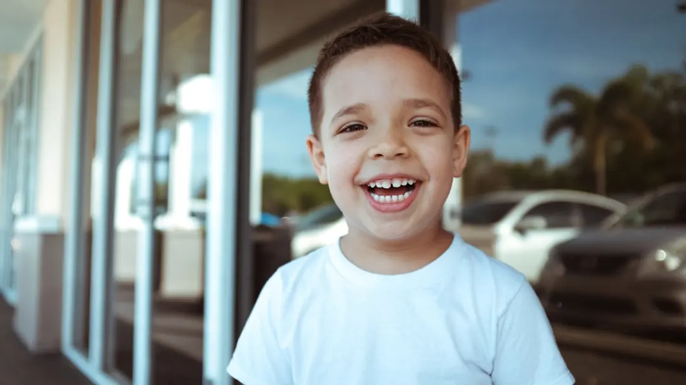

La recomendación habitual es concertar la primera visita cuando sale el primer diente y, en cualquier caso, durante el primer año de vida. Si tu hijo ya es mayor y aún no ha ido al dentista, este también es un buen momento para empezar: no hace falta esperar a que aparezca una molestia. ¿Por qué tan pronto si solo tiene dientes de leche? Los dientes temporales ayudan a masticar, hablar y mantener el espacio para los definitivos. Pueden tener caries desde que aparecen, aunque el niño todavía no sepa explicar que le duele algo. Una visita temprana permite revisar cómo va saliendo la dentición, detectar señales iniciales de caries y resolver dudas sobre higiene y alimentación antes de que se conviertan en un problema. El Consejo General de Dentistas de España recomienda la primera revisión durante el primer año de vida. La Asociación Americana de Odontología Pediátrica propone hacerla al aparecer el primer diente o, como muy tarde, al cumplir un año. No es una fecha rígida para todas las familias: si ves una lesión o tu hijo tiene molestias, pide cita antes. ¿Y si al cumplir un año aún no le han salido dientes? El ritmo de erupción varía de un niño a otro. Aun sin dientes visibles, puedes comentar la situación en una primera revisión. El dentista comprobará el desarrollo de la boca y te dirá si basta con observar o conviene hacer algún seguimiento. Si la primera visita se ha retrasado hasta los dos o tres años, tampoco hay motivo para posponerla más: se puede comenzar con una revisión adaptada a su edad. ¿Qué ocurre durante la primera consulta? La visita suele centrarse en conocer al niño y evaluar su boca. El profesional observa dientes, encías, erupción, mandíbula y mordida. Pregunta por el cepillado, la alimentación, el uso de chupete o la succión del dedo y explica a la familia cómo cuidar los dientes en casa. Si el niño es pequeño o se siente inseguro, puede permanecer sentado en el regazo de su madre, padre o cuidador durante la exploración. Que llore o se mueva un poco no significa que la visita haya salido mal. Para muchos bebés es una situación nueva. El equipo puede adaptar el ritmo, hacer pausas y limitar la exploración a lo que el niño tolere de forma segura. Cuando se detecta un problema, se explica qué opciones existen y si hacen falta más pruebas o una cita de seguimiento. Cómo preparar a un niño para ir al dentista Habla de la visita con palabras sencillas. Puedes decirle que el dentista contará sus dientes y comprobará que están sanos. Evita prometer que no ocurrirá nada que no puedas asegurar.No presentes la consulta como un castigo. Frases como «si no te cepillas, te llevaré al dentista» pueden crear miedo antes de conocer al equipo.Elige una hora cómoda. Si es posible, programa la cita cuando suele estar descansado y evita que coincida con su siesta.Lleva tus preguntas. Anota dudas sobre erupción, cepillado, pasta dentífrica, chupete o hábitos de alimentación. También es útil contar si ha sufrido algún golpe en la boca. Higiene dental infantil desde el primer diente Antes de que salgan los dientes, se pueden limpiar suavemente las encías. Desde la aparición del primer diente, empieza el cepillado dos veces al día con un cepillo pequeño y suave; uno de esos cepillados debe ser antes de acostarse. El adulto debe poner la pasta y realizar o supervisar el cepillado, porque los niños pequeños todavía no tienen destreza suficiente para limpiar todas las superficies. En España, el Consejo General de Dentistas aconseja pasta fluorada de 1.000 ppm para menores de seis años. En menores de tres, usa una cantidad mínima, similar a un grano de arroz; entre los tres y los seis años, una cantidad del tamaño de un guisante. A partir de los seis años pueden cambiar la concentración y la cantidad según la edad y el riesgo individual. Consulta al dentista si tienes dudas sobre la pasta apropiada, especialmente si tu hijo aún no sabe escupir. Cuando dos dientes se tocan, puede ser necesario limpiar el espacio entre ellos con ayuda de un adulto. La consulta es un buen lugar para que te enseñen cómo hacerlo sin lastimar la encía. Reducir la frecuencia de bebidas y alimentos azucarados también ayuda a prevenir caries: no basta con cepillar bien si los dientes están expuestos continuamente al azúcar. Señales para pedir cita sin esperar a la revisión prevista Consulta si observas manchas blancas opacas, marrones o negras en los dientes; dolor al masticar; sensibilidad persistente; encías inflamadas; mal aliento que no mejora con la higiene; o un golpe que haya movido o roto un diente. Si aparecen fiebre, dolor intenso o hinchazón en la cara, solicita atención dental pronto. Ante dificultad para respirar o tragar, acude a urgencias médicas. Un diente de leche con caries merece valoración aunque vaya a caerse más adelante. La lesión puede causar dolor e infección y afectar al día a día del niño. El dentista decidirá si precisa tratamiento, vigilancia o cambios en los hábitos de cuidado. ¿Cada cuánto hay que volver? La frecuencia se decide tras valorar la edad, la aparición de caries, la higiene, los hábitos y el desarrollo de la dentición. No todos los niños necesitan el mismo intervalo. El Consejo General de Dentistas recomienda mantener revisiones periódicas, al menos anuales, y el profesional puede indicar visitas más frecuentes si existe mayor riesgo de caries o alguna alteración que convenga seguir. En Marcos Martínez Clínica Dental, en Opañel, cerca de Oporto, atendemos a niños y familias con cita previa. Si aún no habéis hecho la primera revisión, podéis llamar para elegir un momento cómodo y contarnos la edad del niño y el motivo de la consulta. Solicita la primera revisiónPodemos revisar la boca de tu hijo y darte pautas de cuidado adaptadas a su edad. Por favor, pide cita antes de acudir a consulta.Llamar: 915 60 81 09 WhatsApp: 662 671 383 Lecturas y servicios relacionadosOdontopediatría en OpañelCómo preparar una visita tranquilaPrevención y limpieza dental Fuentes consultadasConsejo General de Dentistas de España: odontopediatría y primera visitaConsejo General de Dentistas de España: higiene y revisiones infantilesAmerican Dental Association: primera visita dental del bebéEste artículo orienta a las familias, pero no sustituye la valoración individual de un dentista.